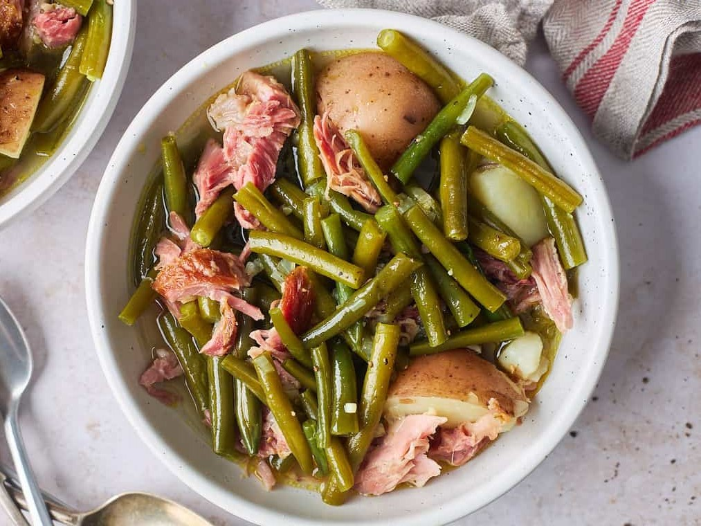

Southern-style green beans is a traditional American dish originating from the southern parts of the country. The dish is characterized by its slow (4 or more hours) cooking and a salty, smoky flavor. The dish is usually made with a combination of green beans, onions, bacon, garlic, salt, pepper, and sugar.
Meal prep time : 1 hour 30 minutes
Servings : 4